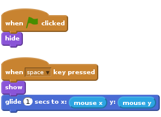
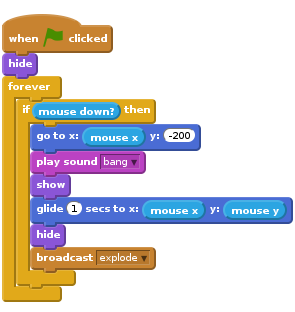
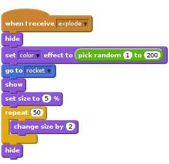

Lời giới thiệu
Lần này, chúng ta sẽ tạo một màn hình pháo hóa trong một thành phố.

BƯỚC 1: Tạo một tên lửa bay về phía con trỏ chuột
Nhãy nhập những hình nền khác nhau cho trò chơi
Danh sách liệt kê hoạt động
- Bắt đầu một dự án Scratch. Xóa chú mèo bằng cách click chuột phải và chọn lệnh “Delete”
- Thay thế phông nền với outdoor/city-with-water (ngoài trời/thành phố trong nước)
- Sử dụng lệnh
Upload sprite from file(tải hình ảnh từ file) {.blockgrey} để thêm một tên lửa cho dự án. - Làm ẩn tên lửa khi click vào lá cờ màu xanh lá cây.
Bây giờ chúng ta cần tạo một tên lửa di chuyển về phía con trỏ chuột khi click.
- Thêm một khối điểu khiển
when space key pressedvà ở đó làm cho tên lửa xuất hiện và lướt về phía con trỏ chuột.

Chạy thử dự án của bạn
Chọn vào lá cờ màu xanh lá cây, đặt con trỏ chuột lên sân khấu.
Tên lửa có xuất hiện và di chuyển đến con trỏ chuột?
Chuyện gì sẽ xảy ra khi ta không di chuyển chuột và nhấn vào khoảng không một lần nữa?
Danh sách hoạt động
- Pháo hoa không bay từ bên này sang bên kia, do đó đảm bảo rằng nó luôn lướt về phía con trỏ chuột từ phía dưới màn hình. Trước khi chúng ta cho hiển thị tên lửa, dùng khối
go to blockđể giúp nó di chuyển tới đáy màn hình nhưng giữ nguyên vị trí theo chiều dọc.
![when FLAG clicked
hide
when [space v] key pressed
go to x: (mouse x) y: (-200)
show
glide (1) secs to x: (mouse x) y: (mouse y)](860f21a1a7af18f6a1bd8c93abd328e1c9609d04.png)
Chạy thử dự án của bạn
Click vào lá cờ màu xanh, đặt trỏ chuột vào màn hình và nhấn phím cách.
Tên lửa có bay về phía trỏ chuột từ dưới màn hình? Chuyện gì xảy ra khi ta di chuyển chuột và nhấn vào khoảng không một lần nữa?
Danh sách hoạt động
- Cuối cùng, hãy thực hiện công việc này bằng cách dùng chuột thay vì dấu cách. Để thực hiện nó, chúng ta có thể dùng lệnh trong một khối forever if mouse down (luôn luôn nếu dùng chuột).
Sau đó hoán đổi khối when space key pressed (khi ấn chuột) bằng khối when flag clicked (khi click vào lá cờ) và hãy chắc chắn rằng tên lửa được ẩn đi khi mọi thứ khởi động.

Chạy thử dự án của bạn
Click vài lá cờ màu xanh lá, sau đó nhấn chuột trên sân khấu. Click một lần nữa tại một điểm khác.
Hãy thử!
- Thử làm cho một vài tên lửa chậm hoặc nhanh hơn các tên lửa khác một chút.
- Thử thay đổi nơi tên lửa di chuyển để khiến nó trượt về phía con trỏ chuột hơi có hình vòng cung.
Lưu dự án của bạn
BƯỚC 2: Làm cho tên lửa phát nổ
Danh sách hoạt động
- Bước đầu tiên để làm cho tên lửa phát nổ là làm nó tạo ra một tiếng nổ Resources/bang.wav trước khi nó bắt đầu di chuyển, sau đó ẩn đi khi nó tới vị trí con trỏ chuột. Nhập một đoạn âm thanh vào thẻ Sounds (âm thanh) và click nút
Upload sound from file(Tải âm thanh từ file).
![when FLAG clicked
hide
forever
if <mouse down?> then
go to x: (mouse x) y: (-200)
play sound [bang v]
show
glide (1) secs to x: (mouse x) y: (mouse y)
hide](6ddd864e4874536ecf273354571e6a4cfdde8f70.png)
- Bước tiếp theo, làm cho tên lửa truyền một thông điệp mới khi nó phát nổ. Chúng ta sẽ nghe thông điệp này sau.

Chạy thử dự án của bạn
Click vào lá cờ màu xanh.
Hãy chắc chắn rằng tên lửa phát ra âm thanh và ẩn khi tới vị trí con trỏ chuột.
Danh sách hoạt động
- Tạo một hình mới từ File, Resources/firework1.png
- Khi nhận được thông điệp về vụ nổ, nó sẽ tự ẩn đi và di chuyển tới vị trí quả tên lửa, sử dụng khối
go to, tự hiện ra và lại biến mất sau một giây.
![when I receive [explode v]
hide
go to [rocket v]
show
wait (1) secs
hide](dfc42e82a65fccdb33e8da460ea3f7273b41a43f.png)
Chạy thử dự án của bạn
Bắn một quả tên lửa khác.
Nó có được thay thế bằng hình vụ nổ khi phát nổ không?
Chuyện gì sẽ xảy ra khi bạn giữ chuột trong lúc di chuyển nó? (Đừng lo lắng, chúng ta sẽ sửa lỗi đó sau).
Lưu dự án của bạn
BƯỚC 3: Làm cho mỗi vụ nổ trở nên độc đáo
- Bây giờ chúng ta làm cho mỗi vụ nộ trở nên độc đáo hơn bằng cách sử dụng lệnh
set color effect, và chọn một màu sắc bất kì trong khoảng từ 1 tới 200 trước khi hiển thị chúng.
![when I receive [explode v]
hide
set [color v] effect to (pick random (1) to (200))
go to [rocket v]
show
wait (1) secs
hide](ab4cca93ae691be97374355aefb7c04ae79f9eb6.png)
Chạy thử dự án của bạn
Click vào lá cờ màu xanh.
Mỗi vụ nổ có một màu khác nhau không?
Danh sách hoạt động
- Hãy thêm một số hình ảnh khác nhau cho vụ nổ bằng các sử dụng Resources/firework2.png và Resources/firework3.png, rồi chuyển đổi chúng cho mỗi tên lửa một lần nữa trước khi hiển thị nó.
Chạy thử dự án của bạn
Click vào lá cờ xanh lá.
Mỗi tên lửa có một hình ảnh vụ nổ khác nhau không?
Danh sách hoạt động
- Cuối cùng, hãy làm cho vụ nổ lớn hơn sau khi tên lửa phát nổ! Thay vì chờ trong một giây, đặt kích thước của sprite 5% trước khi hiển thị nó, và sau khi nó đã được thể hiện, tăng kích thước 2 fifty times, sử dụng lệnh
repeat.

Chạy thử dự án của bạn
Click vào lá cờ màu xanh lá.
Hình ảnh vụ nổ có lan ra từ trung tâm và lớn dần lên không?
Hãy thử!
- Tại sao không làm mỗi vụ nổ trở nên độc đáo hơn bằng cách thay đổi kích thước và tốc độ bùng cháy của vụ nổ.
Lưu dự án của bạn
Step 4: Sửa lỗi phát thông tin
Bạn có nhớ rằng lúc trước chúng ta đã có một lỗi liên quan tới việc giữ chuột?
Vấn đề này xuất hiện bởi khi tên lửa phát thông tin vụ nổ của nó, nó sẽ ngay lập tức lặp lại nếu có vòng lặp và di chuyển trở lại phía dưới sân khấu, nó diễn ra trước khi vụ nổ được chuyển tới vị trí của tên lửa.
Danh sách hoạt động
- Để sửa lỗi này, chúng ta có thể thay thế các khối truyền phát bằng một khối truyền và chờ. Bằng cách này, vòng lặp sẽ không lặp lại tới khi vụ nổ kết thúc.
![when FLAG clicked
hide
forever
if <mouse down?> then
go to x: (mouse x) y: (-200)
play sound [bang v]
show
glide (1) secs to x: (mouse x) y: (mouse y)
hide
broadcast [explode v] and wait](51d790b810c54f3bd5143fbe57929d98b79c1fe9.png)
Chạy thử dự án của bạn
Click vào lá cờ màu xanh lá, giữ chuột và di chuyển quanh sân khấu.
Hình ảnh vụ nổ xuất hiện ở đúng nơi và vào đúng thời điểm không?
Lưu dự án của bạn
Tuyệt vời, bạn đã hoàn thành, giờ hãy thưởng thức trò chơi!
Đừng quên chia sẻ trò chơi của bạn với những người thân bằng cách click “Share” (chia sẻ) trên thanh menu!